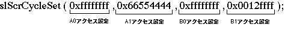

Return to previous page | Return to menu | Go to next page
void
Scroll function
Cycle pattern setting
void slScrCycleSet(a , b , c , d)
Uint32 a ;
Uint32 b ;
Uint32 c ;
Uint32 d ;
a Cycle pattern of bank A-0 b Cycle pattern of bank A-1 c Bank B-0 cycle pattern d Cycle pattern of bank B-1
Set the cycle pattern for each bank. If each bank is divided, cycle patterns can be set for a and b and c and d. When the bank is not divided, cycle patterns can be set for a and c. For details on the values to be set, refer to “HARDWARE MANUAL vol. 2” VDP2 User Manual: P31 ~.
None
The function “slScrAutoDisp” can be used to automatically set the cycle pattern to display the scroll screen specified at that time.

Reference: HARDWEAR MANUAL vol.2 (VDP2)
slScrCycleSet